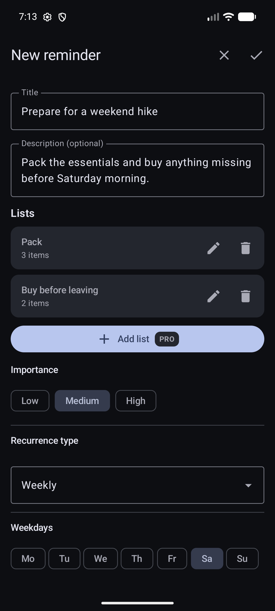
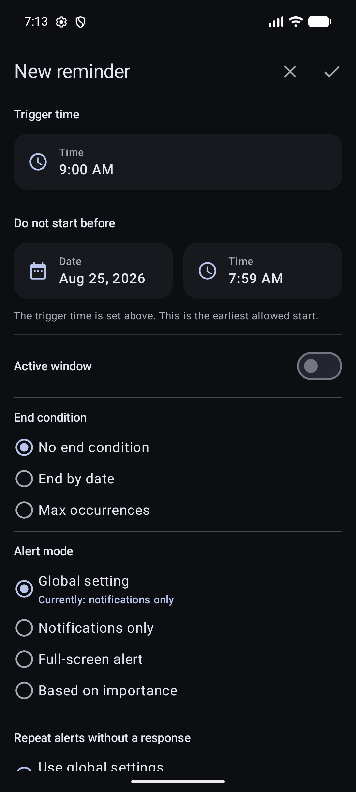
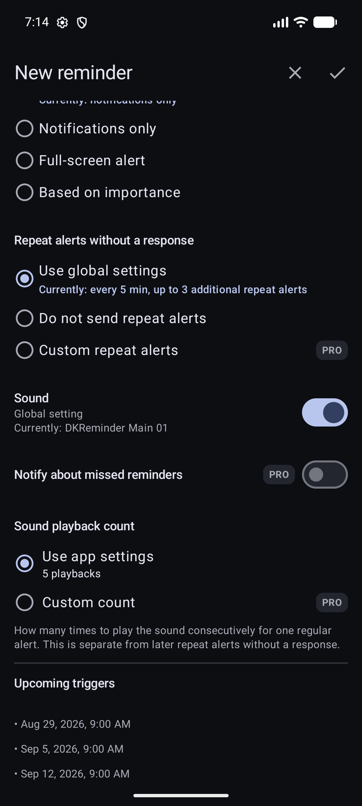
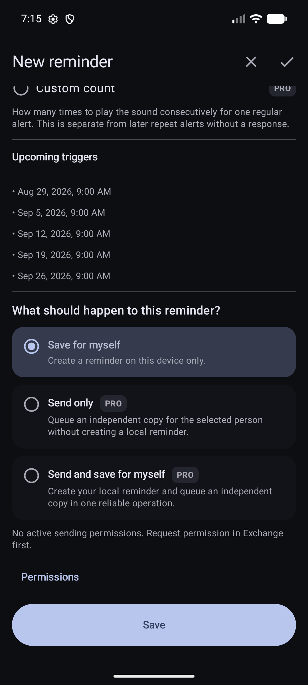

Створення й повторення
Створіть одне правило — і отримуйте потрібні сигнали.
Нагадування зберігає назву, розклад і налаштування. Сигнал — це конкретне повідомлення, яке DKReminder показує у визначений час. Зміна одного сигналу не дорівнює зміні всього правила нагадування.
Оберіть спосіб старту
Натисніть +, щоб створити нагадування
Залежно від збереженого налаштування й доступу Pro DKReminder відкриє повний редактор або покрокове створення. Обидва способи зберігають ті самі поля нагадування.
Підходить, якщо запис у каталозі вже близький до вашої справи. Відкрийте його й перевірте назву, час і розклад.
Показує лише поля, потрібні для вибраного розкладу.
Зручний, коли ви знаєте точний тип повторення й хочете бачити всі відповідні параметри в одній формі.
Під час першого запуску створює разову чернетку на п’ять хвилин від зараз і показує фактичний час до збереження.
Одна послідовна форма
Пройдіть повний редактор крок за кроком
У прикладі створюється щотижневе суботнє нагадування про підготовку до походу. Обирайте кроки в тому самому порядку, у якому поля розташовані в редакторі.
Скріншоти поки показують англійський інтерфейс; розташування полів в українській версії таке саме.

Опишіть справу й задайте її ритм
- Назва й опис пояснюють, що треба зробити, і додають контекст, який знадобиться під час сигналу.
- Списки дають змогу відмічати пов’язані пункти. Перший список доступний усім, а створення додаткових списків — це можливість Pro.
- Важливість також може визначати спосіб сповіщення, якщо нижче обрати варіант «За важливістю».
- Тип повторення задає розклад. У цьому прикладі «Щотижня» і «Субота» означають один сигнал щосуботи.

Визначте, коли і як може працювати розклад
- Час сигналу — це час доби для кожного запланованого спрацювання.
- Не починати раніше задає найраніші дозволені дату й час для розкладу.
- Активне вікно може обмежити часті сигнали частиною доби. Дізнайтеся, як воно працює.
- Умова завершення залишає правило без кінцевої дати, зупиняє його у вибрану дату або після заданої кількості спрацювань.
- Спосіб сповіщення визначає звичайні сповіщення, повноекранні сигнали або поведінку за важливістю. Повноекранним доступом керує Android.

Визначте поведінку сигналу без відповіді
- Повторні сигнали без відповіді можуть використовувати загальне налаштування, бути вимкненими або мати власне правило Pro. Це окремі пізніші сигнали, а не повторне програвання звуку. Докладніше про повторні сигнали.
- Звук може використовувати загальне налаштування або окремий варіант для цього нагадування.
- Сповіщення про пропущені нагадування — додаткове Pro-сповіщення після пропущеного сигналу.
- Кількість відтворень звуку визначає послідовне програвання під час одного звичайного сигналу.
- Майбутні спрацювання дають змогу перевірити найближчі розраховані дати до збереження.

Перевірте результат і збережіть
- Ще раз перевірте майбутні спрацювання. Якщо дати неправильні, поверніться до розкладу, а не зберігайте нагадування.
- Зберегти для себе створює нагадування на цьому пристрої.
- Лише надіслати і Надіслати та зберегти для себе — це Pro-дії Обміну. Вони стають доступними, коли одержувач дозволить вам надсилання. Докладніше про надсилання нагадувань.
- Зберегти застосовує вибраний результат. До натискання цієї кнопки нічого не створюється.
Почніть із готового варіанта
Каталог — це короткий шлях до того самого редактора, а не окремий тип нагадувань. Оберіть близький варіант, а потім перевірте його назву, час і розклад.

Скористайтеся сценарієм «Зустріч» або «Дедлайн» · Pro
Ці покрокові сценарії збирають структурований контекст перед звичайною перевіркою нагадування. «Зустріч» зберігає учасників, формат, місце чи онлайн-платформу й підготовку. «Дедлайн» — кінцеву дату, ритм попереджень, адресу або реквізити й підготовку.


Разові нагадування
Оберіть Одноразово для справи, про яку треба повідомити один раз у конкретну дату й час, наприклад завтра о 10:00 зателефонувати в сервіс.
- Оберіть Одноразово.
- Вкажіть дату й час.
- Налаштуйте важливість і спосіб показу.
- Збережіть і перевірте запланований час.
Кожні N хвилин, годин або днів
Інтервальне повторення потрібне, коли важлива відстань між спрацюваннями, а не календарна назва періоду.
Для короткої повторюваної справи в межах активного вікна.
Створює точки за заданим інтервалом. Відкладання одного сигналу не зміщує основний розклад.
Відраховує фіксовані інтервали в днях від першого спрацювання.
Це інтервал у 28 днів, а не щомісячне повторення.
- Оберіть Кожні N хвилин, Кожні N годин або Кожні N днів.
- Вкажіть інтервал і Перше спрацювання.
- За потреби додайте активне вікно та умову завершення.
- Оберіть За розкладом або, з Pro, Від моменту реакції.
Щоденні, щотижневі, щомісячні й щорічні розклади
Щодня й щотижня
Щодня працює в один або кілька вибраних часів кожного календарного дня. Щотижня — у вибрані дні тижня в заданий час. Кожні N тижнів додає інтервал між потрібними тижнями: тиждень дати «Початок повторення» задає фазу, а спрацювання відбуваються у вибрані дні тижня в зазначений час.
Щомісяця
Щомісячний розклад спирається на календарні місяці, а не на фіксовану кількість днів. Оберіть певний день місяця або Pro-режим із відліком від фактичного кінця місяця.
- Для певного дня, наприклад 31-го, оберіть поведінку в коротшому місяці: останній день, перший день наступного місяця або пропуск місяця.
- Від кінця місяця · Pro підтримує останній день або 1–27 днів до кінця. Дата окремо обчислюється для кожного календарного місяця.
Щороку
Щорічне повторення використовує календарні місяць і дату. Для 29 лютого оберіть явне правило невисокосного року: 28 лютого, 1 березня або тільки високосні роки.
За розкладом або від моменту реакції
Цей вибір доступний для інтервальних типів «Кожні N хвилин», «Кожні N годин» і «Кожні N днів».
Сигнал запланований на 10:00, інтервал — дві години. Навіть якщо ви відреагували о 10:37, наступна точка лишається о 12:00.
Ви відреагували о 10:37, тому наступний сигнал заплановано на 12:37. До реакції DKReminder не просуває цей ланцюжок.
Ручний денний цикл · Pro
Ручний денний цикл підходить, коли початок дня змінюється, а подальші сигнали мають відраховуватися від реального старту. Цикл ніколи не запускається автоматично.
- Оберіть Ручний денний цикл.
- Вкажіть інтервал і включні межі активного вікна.
- За потреби увімкніть допоміжне нагадування про старт циклу.
- Для обмеженого курсу задайте кількість ручних денних запусків.
- Кожного дня відкрийте нагадування й натисніть Почати, коли будете готові.
Приклад: старт о 09:30, інтервал дві години, активне вікно до 18:00. DKReminder запланує 11:30, 13:30, 15:30 і 17:30, але не додасть 19:30.


Активне вікно й календарні винятки
Активне вікно обмежує час створення нових планових спрацювань. Обидві межі включні; вікно може переходити через північ, наприклад 22:00–06:00.
- Точка поза вікном не переноситься автоматично на його початок: DKReminder шукає наступну допустиму планову точку.
- Для хвилинних/годинних інтервалів і ручного циклу неправильне перше розраховане спрацювання блокує збереження або старт, доки ви не зміните час чи вікно.
- Уже створене спрацювання можна відкласти за межі активного вікна, бо ця дія стосується одного сигналу, а не основного розкладу.
- Правила короткого місяця й 29 лютого з’являються лише для відповідного календарного винятку.
Умови завершення, результат і типові перевірки
Повторюваний розклад може працювати до ручної зупинки, завершитися після заданої кількості планових спрацювань або за датою. Ручний денний цикл використовує ліміт курсу, а разове нагадування не потребує умови завершення.
Якщо розклад виглядає неправильно
- Перевірте, що обрали потрібний тип: інтервальний або календарний. Кожні 28 днів — не щомісяця.
- Звірте значення стартового поля: Перше спрацювання, Початок повторення або Починати не раніше.
- Для «Кожні N тижнів» перевірте тиждень відліку й вибрані дні.
- Для 29, 30, 31 числа або 29 лютого перевірте календарне правило.
- Переконайтеся, що активне вікно не відсікає очікувану точку.
- У режимі «Від моменту реакції» наступний сигнал обчислюється лише після вашої відповіді на поточний.
Пов’язані матеріали
Не знайшли відповідь?
Напишіть на reminder@dvkworks.com і вкажіть тип повторення, перше спрацювання та очікуваний результат.